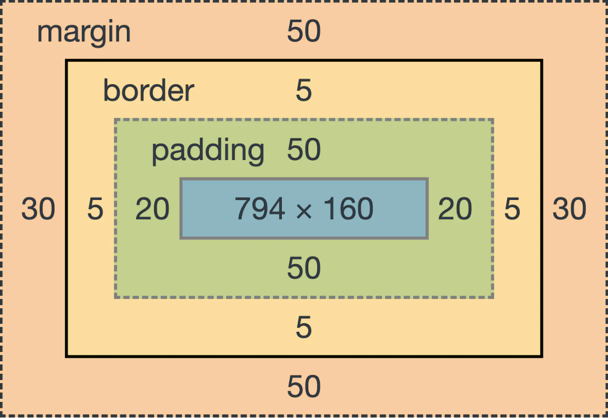

Box Model

Box model tai kiekvieno HTML elemento struktūrizavimas sekcijomis/stačiakampiais. Kiekvienas HTML elementas
(išskyrus per kelias
eilutes persikeliantys display: inline elementai) turi 4 sekcijas: content,
padding,
border ir margin. Margin, padding ir border sekcijos gali turėti atskirus
nustatymus į visas
(keturias) puses.
Content(turinio) išmatavimai standartiškai nustatomi naudojant width ir height savybes (jeigu box-sizing savybė
nebuvo pakeista).
Standartiškai height ir width savybės nustatomos content sekcijai. Tačiau tai galima pakeisti naudojant savybę
box-sizing.
Box model sekcijos
- content - turinys
- padding - kamšalas
- border - sienelės
- margin - paraštės